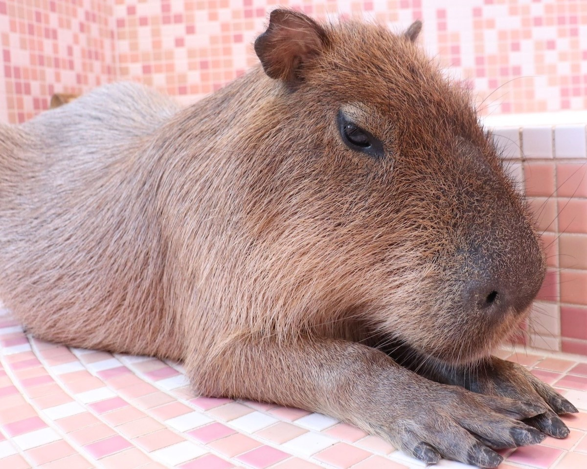
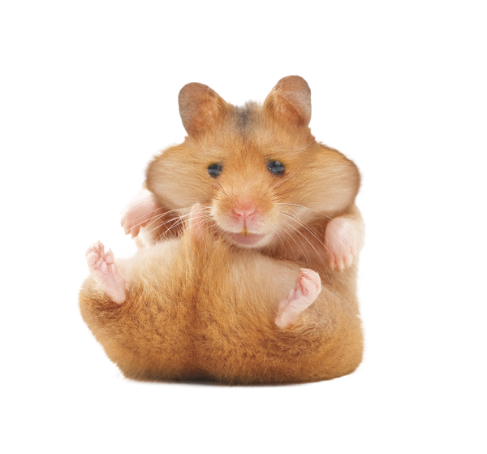

The Essence of Animal Cafe Experience
An animal cafe is a type of establishment that combines the concept of a traditional cafe
with the presence of animals, typically domesticated or exotic ones, for customers to
interact with. The inspiration behind animal cafes varies, but the common goal is
to provide a unique and enjoyable experience for visitors while promoting animal
welfare and education. Here are the typical inspirations, goals, and commitments
to animal welfare that animal cafes strive to uphold.
I recently visited this cafe and had the most delightful experience.
As soon as I walked in, I was greeted by a warm and cozy atmosphere.The staff was incredibly
friendly and knowledgeable about the animals they had in the cafe. I spent my time
sipping on a delicious latte while cuddling with the most adorable animals.
The animals were well taken care of, and it was evident that their welfare was a top priority.
I highly recommend visiting an animal cafe to anyone looking for a unique and heartwarming experience.
I can't put into words how wonderful this cafe is. It has become a blissful place for me to unwind
after a long day. The moment I open the door, I'm greeted by a pleasant environment.
The cafe is carefully designed to provide each animal with spaces where they can freely move around.
The cafe offers plenty of interactive activities, such as petting sessions and playtime, constantly
bringing joy. I highly recommend this cafe to anyone seeking a unique and peaceful experience.
My visit to this cafe was a memory of a lifetime. The cafe I went to had a strong commitment
to the welfare and protection of animals. Each animal had spaces designed to mimic their natural
environment, allowing them to roam freely and interact with visitors. The staff members were
passionate and knowledgeable. It was evident how healthy and happy the animals were.
For animal enthusiasts seeking meaningful and educational experiences, this cafe is definitely
worth a visit.
